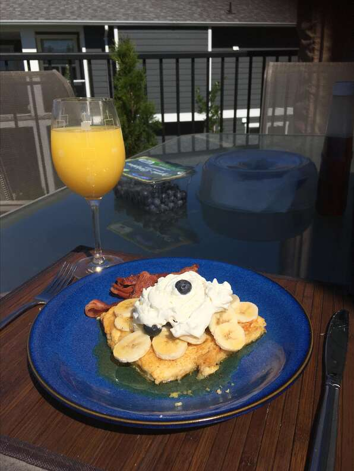

Creme Brulee French Toast

Description
Very rich French toast - can be made ahead of time.
Ingredients
- 1/2 cup unsalted butter
- 1 cup packed brown sugar
- 2 tbsp corn syrup
- 6 slices French Bread
- 5 eggs
- 1 1/2 cups half-and-half cream
- 1 tsp vanilla extract
- 1 tsp brandy-based orange liquer
- 1 tsp salt
Directions
- Melt butter in a small saucepan over medium heat. Mix in brown sugar and corn syrup, stirring until sugar is dissolved. Pour into a 9x13 inch baking dish.
- Remove crusts from bread, and arrange in the baking dish in a single layer. In a small bowl, whisk together eggs, half and half, vanilla extract, orange brandy, and salt. Pour over the bread. Cover, and chill at least 8 hours, or overnight.
- Preheat oven to 350 degrees F (175 degrees C). Remove the dish from the refrigerator, and bring to room temperature.
- Bake uncovered 35 to 40 minutes in the preheated oven, until puffed and lightly browned.
Nutrional Facts
Per Serving: 510 calories; protein 10.2g; carbohydrates 58.7g; fat 26.9g; cholesterol 218.1mg; sodium 359.2mg
Back to Home